Mikalai Saskavets
I'm a:
I'm with:
Django is Awesome for Rapid Development
И так, на руках у нас был монолит. Руковтворное чудо.
Всем хорош!...
Monolithic MVP
Scalability issues
Readability issues
Maintainability issues
Security issues
Кроме того, что совершенно не держал нагрузку, код был очень запутан и были вопросы по безопасности...
Настоящий MVP, одним словом...
И если для тестовых пятиста пользователей и пары видов спорта это было нормально, то для более широкой публики это уже было неприемлемо. Да и видов спорта должно было стать больше к моменту выхода в продекшен.
Да, наше приложение было про спорт и нам приходилось работать с большим количеством спортивных данных, приходящих из внешних источников. В том числе и в режиме реального времени.
И нужно было как-то с этим справляться.
И серебрянной пулей мы выбрали микросервисы.
Конечно, все мы прекрасно знаем, что микросервисы решают все наши проблемы!
Но действительно ли это так?
Вот у нас был монолит. Мы разбросали его куски по облачкам микросервисов и наладили связи между ними. Общаются у нас микросервисы, допустим, через REST API.
А наше приложение начало расти, микросервисов стало больше.
Связей между сервисами начинает становиться больше
И еще больше!
Пока у нас не начинает возникать мысль, что каждый сервис общается с каждым, и может быть не по одному разу. Но это не точно.
Microservices: Coupling and Cohesion?
И так, у нас рано или поздно может возникнуть понимание, что сервисы-то у нас чересчур друг от друго зависимы, высокая связность у нас в нашей микросервисной архитектуре...
Distributed Monolith?
А микросервисное ли у нас вообще приложение, или какой-то, простите, распределенный монолит?!
Ну... это все конечно слова... теория!
Microservices: Synchronous Communication
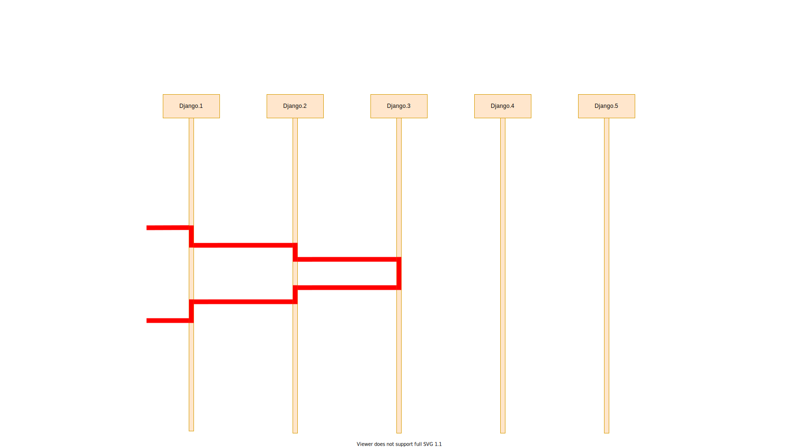
Microservices: Synchronous Communication
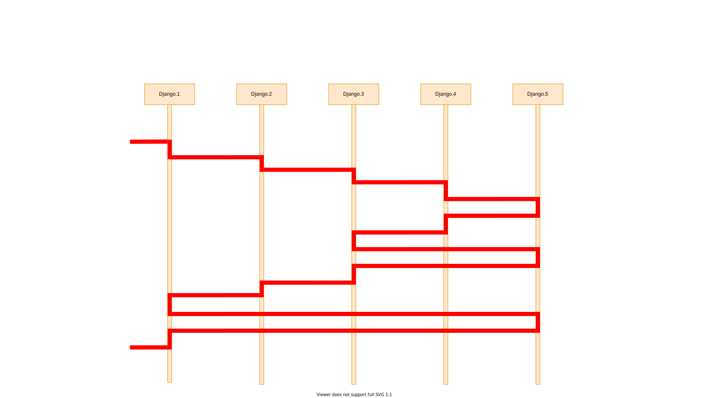
How to bring a pinch of Async to Django world?
Microservices: Synchronous Communication
Microservices: Async Communication (Celery)
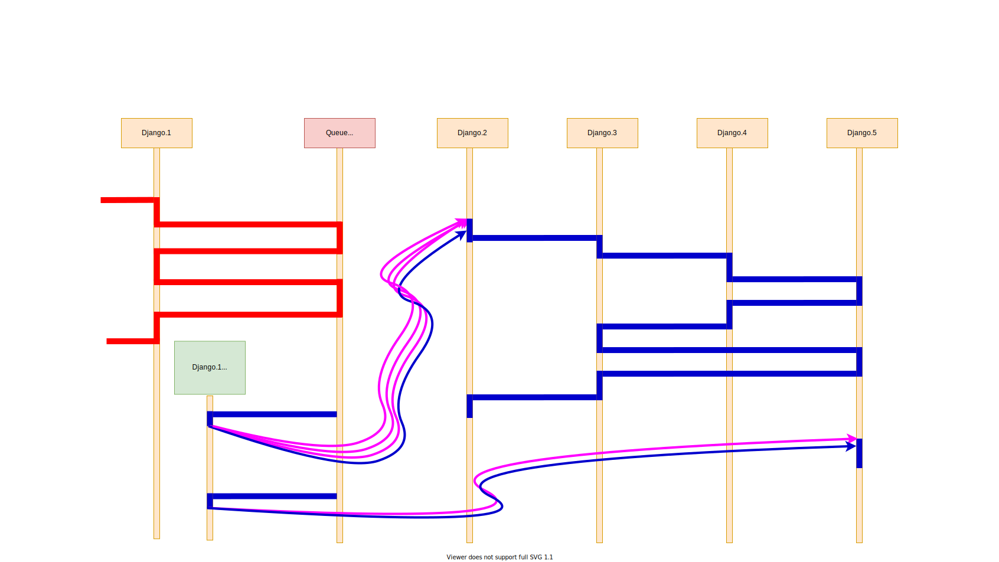
Microservices: Async Communication (Celery)
И тут возникает мысль.
А вдруг нам здесь может как-то помочь Kafka?
What is
Kafka?
Но давайте сначала чуть-чуть посмотрим, что такое кафка.
Distributed Streaming Platform
Kafka for what??
Messaging
Metrics
Log Aggregation
Website Activity Tracking
Queue
... and others ...
Why Kafka???
Но кафка нас зацепила вот такими цифрами.
Конечно, это синтетические бенчмарки, но цифры-то впечатляют!
Some throughput comparsion
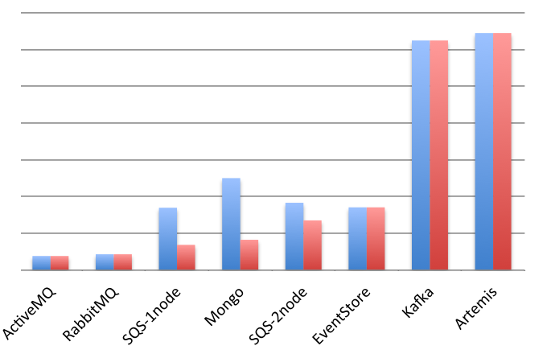
Some throughput comparsion
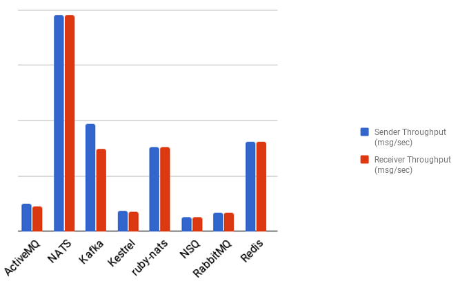
Alternatives for Kafka
2
NATS
Apache Pulsar
Artemis
А есть ли вообще хорошие альтернативы Кафке?
Зачастую приводят вот такие интрументы.
Рэбит и Актив MQ не могут похвастаться такими цифрами в плане производителности, да и с масштабированием у них чуть похуже.
А вот эта тройка, NATS, Pulsar, NSQ, вполне себе хвалится цифрами в бенчмарках. Где-то даже эти цифры поинтереснее.
Но нужно же еще смотреть и на популярность технологии. На поддержку со стороны сообщества и различных вендоров. Сейчас Кафка выигрывает в этом плане.
Ну и Kinesis. Если вы хотите привязать себя намертво к амазону, то почему бы и нет. Тем более у кинезиса есть много интересных штук...
Но если вы хотите чувствовать себя посвободнее, то амазон с недавних пор предоставляет Кафку как сервис. Дороговато чуть-чуть, но убирает головную боль по администрированию кластера в какой-то степени.
Let's start with something simple
1 topic
2 partitions per topic1 consumers group
1 consumer in group
1 producer
Something simple ;-)
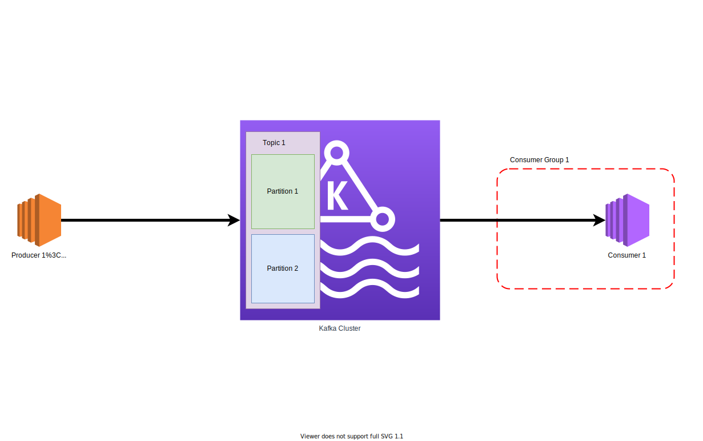
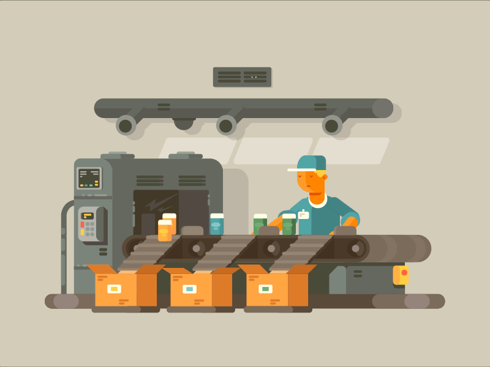
Strategies to put a message to a specific partiton
random
by key:
CRC32(message.key)Murmur2(message.key)
...
Kafka: Message (Record) Format
length: varint
attributes: int8
bit 0~7: unused
timestampDelta: varint
offsetDelta: varint
keyLength: varint
key: byte[]
valueLen: varint
value: byte[]
Headers => [Header]
Kafka: Message
key, value
Kafka: Serializers
JSON, Protobuf, Thrift, Avro
Kafka: Schema overhead
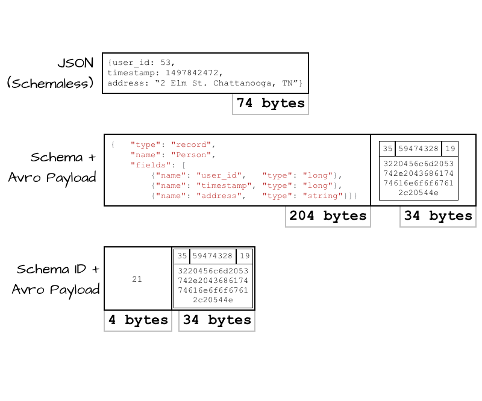
Kafka: Schema overhead
Approach
Schema
Payload
Total
Overhead
JSON (Schemaless)
0
74
74
~ 2x
Schema + Avro Payload
204
34
238
~ 6x
Schema ID + Avro Payload
4
34
38
1x
Kafka: Schema Registry Concept
Python libraries to work with Kafka
kafka-python
pykafka
confluent-kafka-python
aiokafka
What to choose?
kafka-python
pykafka
confluent-kafka
Stars
~ 3 400
~ 1 000
~ 1 500
Contributors*
0 / 4 / 13 / 186
1 / 5 / 10 / 77
0 / 1 / 6 / 57
Releases track
fine
hm… (2018???)
fine
Development track
fine
hm…
fine
What about Throughput?
time (seconds)
MBs/s
Msgs/s
producer
confluent-kafka-python
5.4
17
183 000
producer
kafka-python
68
1.4
15 000
consumer
confluent-kafka-python
5.4
17
183 000
consumer
kafka-python
68
1.4
15 000
Some preparations
# vars.py
import sys;
group = sys.argv[0]
server = sys.argv[1]
registry = sys.argv[2]
topic = sys.argv[3]
topics = sys.argv[3:]
Kafka Producer on Python
import vars; from confluent_kafka import Producer
conf = {'bootstrap.servers': vars.server}
producer = Producer(**conf)
for num in range(1000):
try:
producer.produce(vars.topic, str(num) )
except BufferError:
print("Local producer queue is full, try again")
# Serve delivery callback queue.
producer.poll(0)
# Wait until all messages have been delivered
producer.flush()
Kafka Consumer on Python
import vars; from confluent_kafka import Consumer, KafkaException
conf = {'bootstrap.servers': vars.server,
'group.id': vars.group,
'enable.auto.commit': 'true',
'auto.offset.reset': 'earliest'}
consumer = Consumer(conf)
consumer.subscribe(vars.topics)
try:
while True:
message = c.poll(timeout=1.0)
if message is None: continue
if message.error(): raise KafkaException(message.error())
else:
print(message)
finally:
consumer.close() # ... to commit final offsets.
Avro Schema for messages
# avro_schemas.py
from confluent_kafka import avro
record_schema = avro.loads("""
{
"namespace": "example.net.foobar.serialization.avro",
"name": "FooBar",
"type": "record",
"fields": [
{"name": "foo", "type": "string"},
{"name": "bar", "type": "int"},
]
}
""")
Kafka Producer with Avro
import vars; from confluent_kafka.avro import AvroProducer
from avro_schemas import record_schema
conf = {'bootstrap.servers': vars.server,
'schema.registry.url': vars.registry}
producer = AvroProducer(conf, default_value_schema=record_schema)
for num in range(1000):
try:
producer.produce(vars.topic, {"foo": str(num), "bar": num} )
except BufferError:
print("Local producer queue is full, try again")
# Serve delivery callback queue.
producer.poll(0)
# Wait until all messages have been delivered
producer.flush()
Kafka Consumer with Avro
import vars;
from confluent_kafka import KafkaException
from confluent_kafka.avro import AvroConsumer
from confluent_kafka.avro.serializer import SerializerError
from avro_schemas import record_schema
conf = {'bootstrap.servers': vars.server, 'group.id': vars.group,
'enable.auto.commit': 'true', 'auto.offset.reset': 'earliest',
'schema.registry.url': vars.registry}
consumer = AvroConsumer(conf, reader_value_schema=record_schema)
consumer.subscribe(vars.topics)
try:
while True:
message = c.poll(timeout=1.0)
if message is None: continue
if message.error(): raise KafkaException(message.error())
else:
print(message.value()['bar'] )
finally:
consumer.close() # ... to commit final offsets.
Launch Kafka Consumer with Django
./manage.py run_kafka_consumer
Microservices: Async Communication (Celery)
Microservices: Async Communication (Kafka)
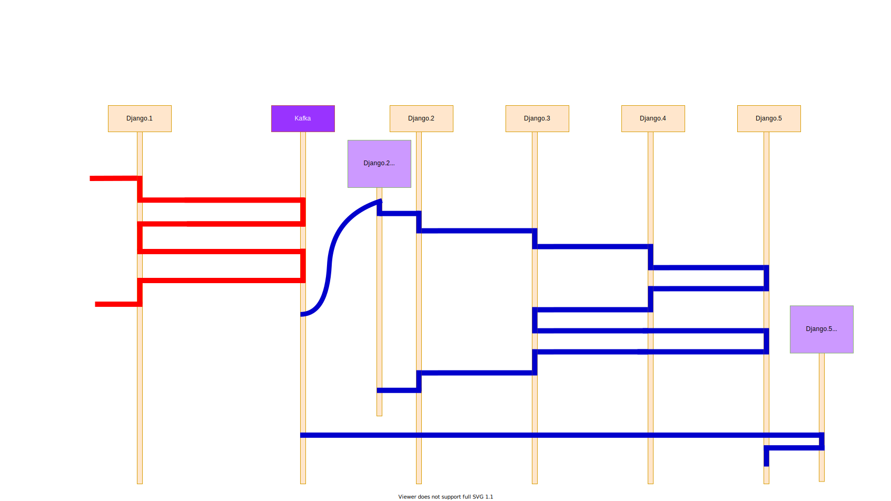
Here we are
Microservices: Async Communication (Kafka)
Relational Database → Kafka
Stream data from RDBS to Kafka
Stream data from PostgreSQL to Kafka
Here we are
Microservices: Async. Debezium. Full
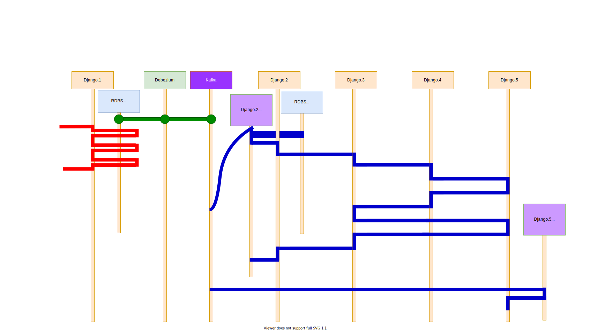
Application Diagram + External Data Handling
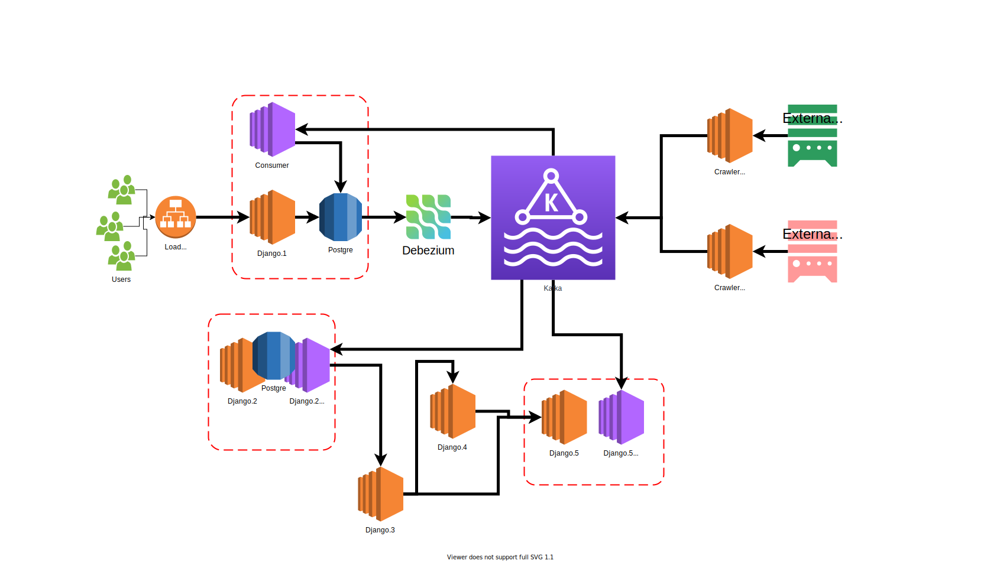
Application Diagram + Marketing Website
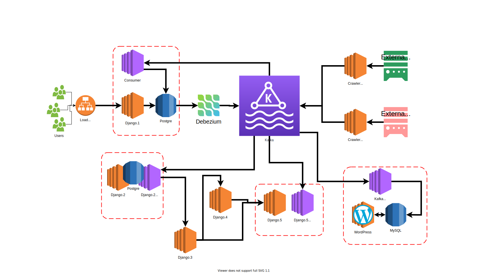
Еще пара микросервисов решат эту задачу.
Забираем данные, помещаем в кафку.
Достаем из кафки, анализируем, преобразуем, кладем в базу данных основного сервиса.
Все бы хорошо, вот только слищком много Java-технологий теперь у нас в проекте. Kafka,... Debezium...
Summary
На каком-то этапе вам придётся переписать ваш монолитный MVP
Используйте микросервисы, если вы готовы ломать свои устои
Если вы прогнозируете высоку. нагрузку на сервис, готовьтесь погрузиться в мир Highload, где много Java-технологий
Не используйте Кафку, если не ожидаете действительно большой нагрузки
Кафка - это технология, очень сложная в понимании, использовании, настройке, поддержке
В микросервисном мире язык программирования перестаёт быть во главе угла
Kafka: Replication
Kafka: Reset Consumer Group Offsets tooling
Reset to Datetime
Reset from Duration
Reset to Earliest
Reset to Latest
Reset to Current Time
Reset to Offset
Shift Offset by 'n'
Reset from file
More strategies to put a message to a specific partiton
random
by key:
CRC32(message.key)CRC32(message.key) + random if no key or key value is NULLMurmur(message.key)Murmur(message.key) + random if no key or key value is NULLMurmur2(message.key)Murmur2(message.key) + random if no key or key value is NULLcustom_function(message.key)
custom_function(message)